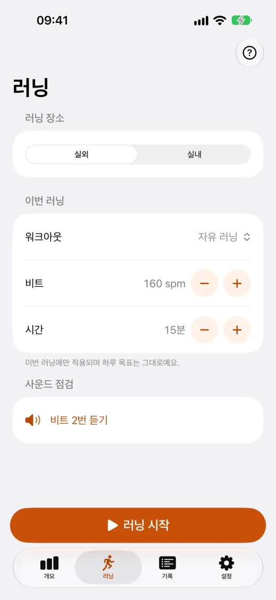
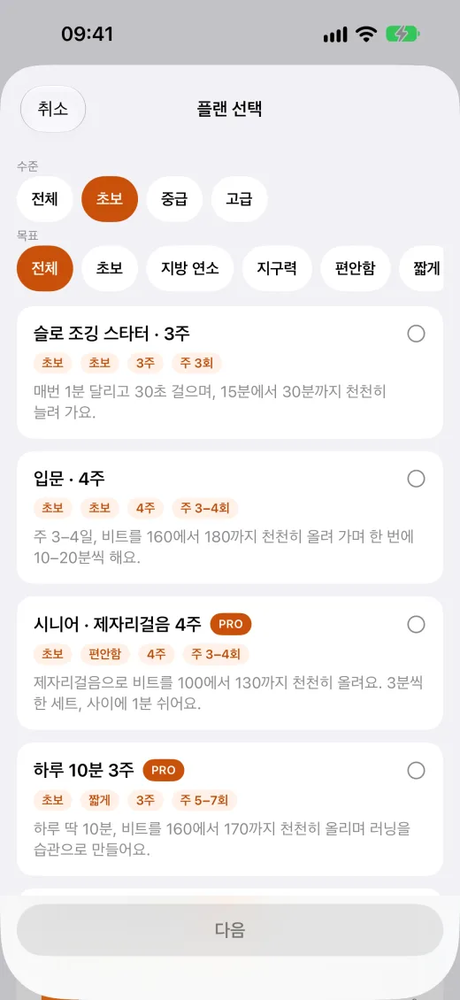
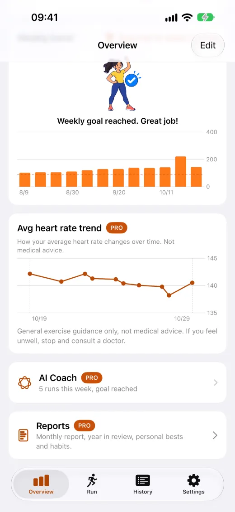
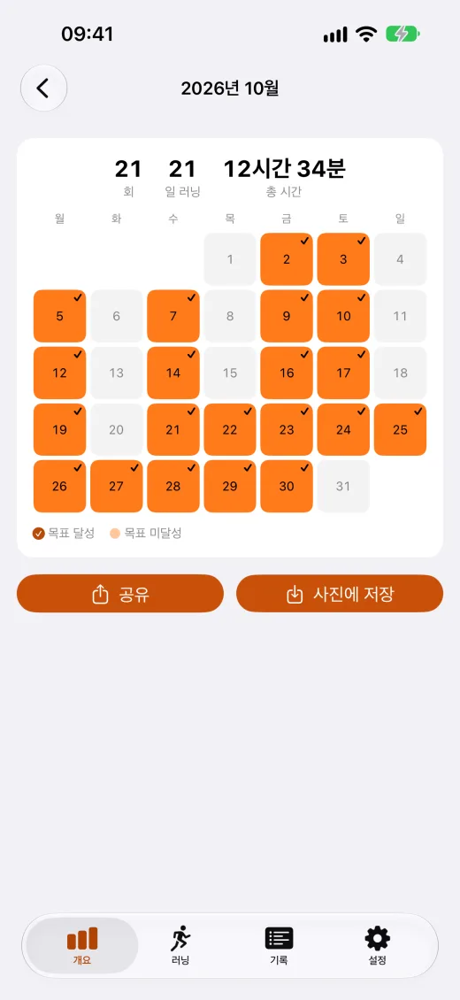

메트로놈
분당 160–180걸음. 소리와 손목 진동으로, 잠금 화면에서도 멈추지 않아요.

워크아웃과 플랜
무료 4주 입문 플랜. 구간 워크아웃은 구간이 바뀔 때 알려 줘요.

Apple Watch
손목에서 바로 러닝을 시작하고, 심박수 상한 알림도 받아요.

건강 데이터는 내 기기에
계정이 필요 없어요. 건강 데이터는 업로드되지 않고 광고에도 쓰이지 않아요.
앱 화면





무료와 Pro
Pro는 한 번 구입으로 계속 쓰며 가족 공유도 지원해요. 구독이 아니에요.
무료
- 메트로놈: 분당 160–180걸음, 소리나 손목 진동으로, 잠금 화면에서도 계속
- 러닝 플랜: 슬로 조깅 스타터 3주, 입문 4주
- 구간 워크아웃: 사용자 지정 1개와 입문 템플릿 2개 무료
- Apple Watch 앱: 손목에서 바로 러닝 시작
- 잠금 화면, Dynamic Island, 위젯에 진행 상황 표시
Pro
- 라이브러리 워크아웃 10개 전체와 무제한 사용자 지정 워크아웃
- 더 많은 플랜: 9주 만에 30분 연속, 주 150분, 상급 300분
- 러닝 데이터 및 추세, 월간 리포트, 연간 리뷰, CSV·PDF 내보내기
- iCloud 동기화로 휴대폰을 바꿔도 기록이 그대로
- 기록 화면 광고 제거